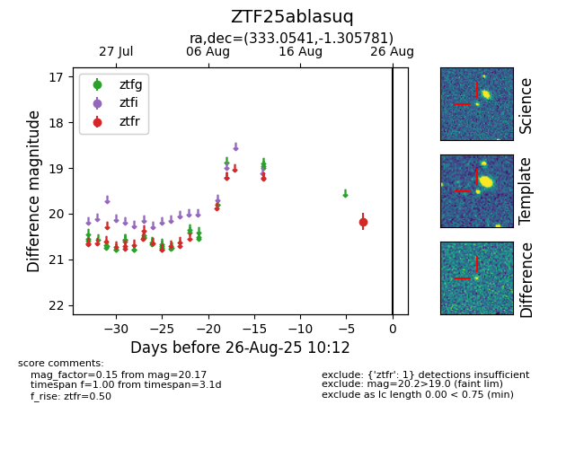

Target ZTF25ablasuq at 2025-08-26 10:12, see:
FINK: fink-portal.org/ZTF25ablasuq
Lasair: lasair-ztf.lsst.ac.uk/objects/ZTF25ablasuq
ALeRCE: alerce.online/object/ZTF25ablasuq
alt names
ZTF25ablasuq (ztf,fink)
coordinates:
equatorial (ra, dec) = (333.0541,-1.30578)
galactic (l, b) = (60.2028,-43.94147)
photometry
last ztfr=20.17
1 ztfr detections
